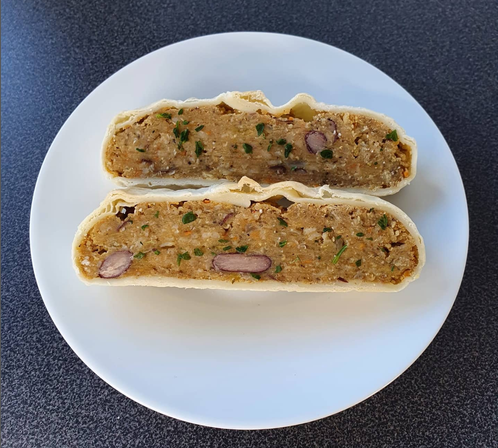

Lentil loaf in puff pastry

A savory vegan lentil loaf wrapped in puff pastry
Quick and easy repice loaded with protein suitable for a vegan lifestyle
Ingredients
- 500g red lentils
- 4 small carrots grated
- 4 small carrots grated
- 1 medium zucchini grated
- 2 medium onions diced
- 1 can kidney beans chopped
- 200g rolled oats
- Salt, pepper, red pepper powder
- 2 sheets puff pastry
Directions
- Cook the red lentils until done, then combine with all the other ingredients and season to taste with salt, pepper and red pepper powder.
- Form 2 loaves and wrap each into one sheet of puff pastry.
- Put into the preheated oven for about 25 minutes at 180° celsius.